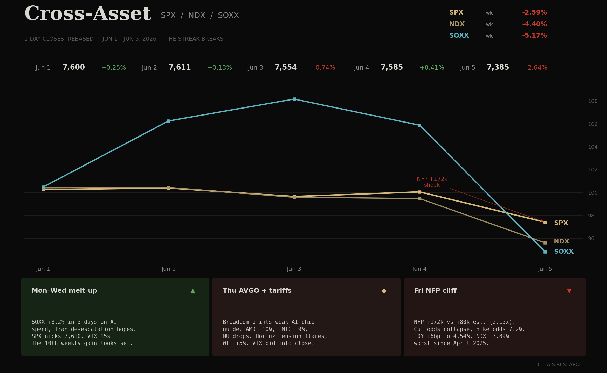
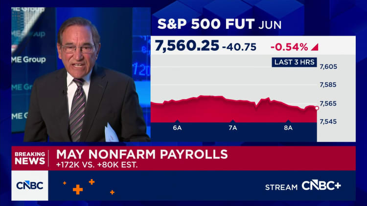
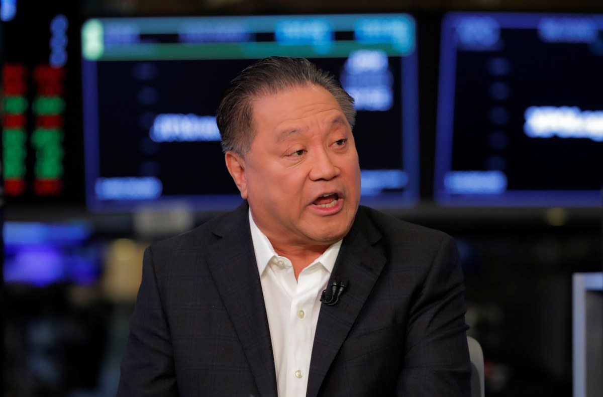
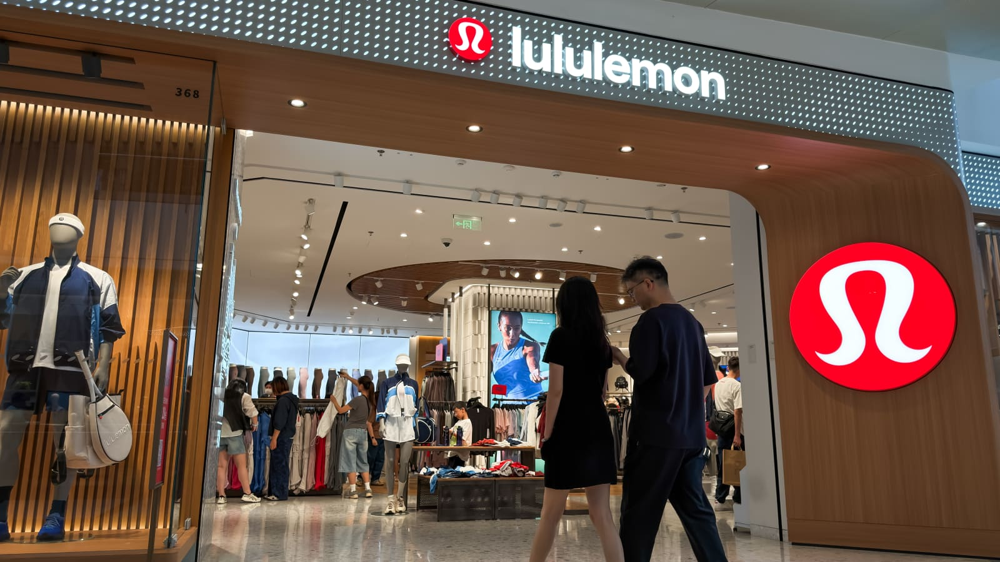

- First weekly loss in ten weeks. SPX −2.59% to 7,384.66. NDX −4.40% to 25,789.33. SOXX −5.18% to 539.66 — the index closed Friday below where it opened Monday after touching a +8% intraweek high. Dow held in: −0.32% to 50,869.
- The break was not earnings or geopolitics. It was Friday’s NFP +172k vs +80k consensus — 2.15x the print, with unemployment holding at 4.3%. World Cup hiring (kicks off June 11) carried Leisure/Hospitality +70k and local government +50k.
- Cut odds collapsed; hike-by-year-end probability jumped from 0.5% to 7.2% intraday. 10Y +9bp to 4.54%. 30Y back to 5.00%. VIX +31.7% on the week, +4.99 points to 20.18 — the surface finally repriced the binary it had been refusing to underwrite.
- AVGO was the second leg of the breakdown. Broadcom’s Thursday print disappointed on AI chip guidance. AMD −10% over the last two sessions, INTC −9%, MU −12.6%. The semi-cycle thesis that drove SOXX +8% Mon-Wed got recut in 36 hours. LULU −11% AH on a cut FY guide; gross margin took a 410bp tariff hit.
The Week's Dominant Narrative
- NFP repriced the cycle in one print. +172k vs +80k expected — the largest beat of the cycle, on a base where every economist on the desk had spent two months arguing the cut-trade was already settled. Unemployment 4.3% unchanged. Average hourly earnings +0.3% m/m, +3.4% y/y. The household balance-sheet bear case (last week’s 2.6% saving rate) just got crowded out of the discussion.
- The World Cup is the asterisk that does not save the print. Tournament kicks off June 11 across U.S. host cities. Leisure & hospitality +70k, local government +50k — both classic FIFA-prep categories. But the consensus already discounted seasonal adjustments. The cycle-shifting variable is not the headline; it is what the FOMC reads into a non-broken labor market at 4.3% UE going into June 16-17.
- Williams: “I don’t see need to raise or lower rates right now.” The New York Fed President is the swing dove. By Friday close, the same speech was being recut as a not-cutting signal — and the hawkish faction (Bostic, Goolsbee in private, Warsh himself) was openly discussing hikes if the Iran inflation channel materializes. The curve carried the conversation: 10Y +9bp, 30Y back to 5.00%.

- AVGO took the AI-chip narrative down before NFP did the macro. Broadcom’s Thursday close + guide undershot the bar that DELL set the prior Friday. The implication priced through the complex: AMD −10% Thu-Fri, INTC −9%, MU −12.6%. SOXX printed +8.2% Mon-Wed and gave it all back +more by Friday. The cleanest tell that the chip cycle was being marked down was the 36-hour reversal in semis with NVDA the relative-best at −2.83%.
- LULU was the consumer tell. Thursday AH guide cut: FY revenue to ~$11.0B, EPS $10.95–$11.15, Americas comps −5%, gross margin compressed 410bp on tariffs. International comps +13%. Stock −11% AH. The international/domestic split mirrors the macro: tariff drag plus a U.S. consumer that is no longer carrying the print.
- DOCU was the offsetting print. Q1 revenue $830M +9%, EPS $1.09 +21%, raised FY27 guide to $3.49B. Non-GAAP op margin 32% vs 29.5%. The single clean beat into the binary tape. The dispersion under the index sell-off is intact — it just flipped sign.
What Volatility Markets Priced
- VIX 20.18 Friday close (+31.7% on the week, +4.99 points). Intraday high 20.49 — the first sustained move above 20 since the Hormuz crisis. The Monday open at 15.79 was the week’s low; by the Friday open the surface had repriced the binary it had been selling at 15 for free. The compression that defined the prior nine weeks was a permission slip, and Friday’s NFP revoked it.
- NDX −3.89% Friday — worst session since April 2025. SPX −2.64% Friday. The dealer-gamma roll that aligned with June 17 VIX expiration and the Warsh FOMC just got front-run by the labor print. Realized vol on Friday alone burned more premium than the week’s implied was paid.
- AVGO implied vs realized: the second straddle that paid. Pre-print weekly straddles priced ~±7%. Thursday-Friday realized was wider once the chip read-through hit AMD/INTC/MU. AMD −10% over two sessions on no AMD-specific catalyst — the cleanest example this quarter of dispersion paying the gamma seller.
- TSLA −10.26% on the week, AMZN −9.10%, MSFT −7.48%. The mega-cap leadership that carried the eighth and ninth weekly gains broke. Single-name dispersion under the index re-collapsed back into broad-based downside — a regime change in vol structure: the surface is now pricing index vol, not single-name dispersion.
- BTC −15%+ on the week to ~$61,500. Crypto carried the risk-asset selloff with a higher beta. Strategy (formerly MSTR) −25% on the week. Coinbase, Circle, and the crypto-treasury complex all −8% Friday. The financialization trade that absorbed flow during the melt-up is now the leverage release valve.
- Consumer staples bid Friday — the flight-to-safety tell. PG +5%, KO and CL bid into the close. That is not a sector rotation; that is a duration-fix bid into late-cycle defensives ahead of a Fed meeting where the hawks are not silent. Watch this signature next week.

Cross Asset Signals
- The long end finally cracked. 10Y +9bp on the week to 4.54%. 30Y back to 5.00% after a one-week dip to sub-5%. The duration trade that bull-flattened on the May 29 PCE just had its 11bp gift handed back inside five sessions. The discount-rate help that excused equity multiples is gone for now.
- DXY +1.14% on the week to 100.07. Dollar carried the hawkish repricing with the curve. Gold −4.2% to 4,353 — the inflation-hedge bid unwound as the cut-trade unwound. The two are the same trade in reverse. The dollar bid is the canary for the FOMC week ahead.
- Oil round-tripped on Hormuz tension. WTI from ~$87.50 Mon to spike $94.85 Wednesday on a tension flare, back to $90.54 Friday. Brent did the same: $91.96 → $96.94 → $93.09. The "peace pivot" of two weeks ago is now living on day-to-day headline risk. Inflation-channel option value is the open lottery ticket for the hawks.
- Sector dispersion broke down by Friday. Consumer staples up, everything else down. Tech, semis, comms, discretionary all sold in unison Friday — the kind of broad-based selling that signals systematic / risk-parity rebalancing, not active stock-picking. The Mon-Wed melt-up was idiosyncratic; the Fri break was structural.
- NDX broke the 26,000 handle in a single Friday session. From 26,834 Thursday close to 25,789 Friday close — a 3.9% one-day move with no single-name catalyst beyond AVGO’s residual. The gap-down structure means the next week opens with a thinner book and a re-loaded put bid as June 16-17 FOMC approaches.
- ISM Mfg 52.5 vs 54.0 prior on Monday — the early week tell that no one weighted. Manufacturing rolling over while services and labor stay hot is exactly the mix that scrambles the cut-trade. The market spent Mon-Wed ignoring the soft signal, then Friday’s hard signal forced the repricing.

Structural Fragilities
- The 4.3% UE is the line — not the headline number. A labor market that prints +172k while holding 4.3% unemployment is a Fed-restraining configuration, not a Fed-cutting one. The market spent ten weeks discounting the cut; Friday’s print invalidates the front-end pricing without invalidating the long-end credit narrative — a textbook stagflation-lite curve setup the hawks are now openly priced for.
- The World Cup asterisk fades into a worse story. If the +172k is largely tournament-prep hiring, the June print mean-reverts and the cut-trade re-emerges. But the FOMC meets June 16-17 — before the June payroll print and on the World Cup’s opening week. They have to act on what is in front of them, which is a hot labor print and an oil tape with Hormuz still wired.
- AVGO’s miss is the cycle inflection, not the print. DELL’s +757% AI orders set a bar that the chip suppliers cannot meet linearly. Broadcom’s soft guide is the second derivative inflecting before the first does. NVDA only −2.83% this week despite the chip-complex carnage tells you the buy-side is segregating GPU exposure from the rest of the silicon. That spread is the next trade.
- LULU’s 410bp tariff hit is the canary, not the company. Americas comp −5% with international comp +13% means the U.S. consumer dispersion is widening within the same demographic the brand always claimed to own. Tariff drag on premium discretionary inventory is the cleanest read on Q3 retail S-curve. The next two weeks of brand prints (LULU set the cadence) will validate or invalidate.
- Crypto cracked first, equities cracked Friday. BTC −15%+, Strategy −25%, the crypto-treasury complex −8% in a single session. The leverage that built on the way up is the same leverage that unwinds on the way down. Watch for a basis-trade dislocation if the BTC selloff extends — that is the channel that bled into equity prime-broker books in 2022 and 2024.
- Warsh’s first FOMC is six trading days away. The market priced him as a soft-handoff dove for two weeks. Friday’s NFP made that pricing impossible to defend. June 16-17 is now a binary: he can either signal patience and let the cut-trade reload (and own a hot labor backdrop), or he can validate the hike-side conversation his own hawks are airing. Both reprice the vol surface again.
Our Trades This Week
- Closed NVDA 205 short puts (opened last week). Closed for a clean exit. The thesis was that NVDA fundamentals were intact going into the AVGO print and the post-earnings consolidation in semis was creating premium that overstated single-name tail risk. Friday’s tape did the work for us: NVDA closed at 205.10 — right at the strike — down 6.20% on the day, but our short-put structure printed time-decay through the AVGO selloff because index gamma, not NVDA-specific weakness, drove the move. Took it off into the weekend rather than carry single-name binary exposure into Warsh’s first FOMC.
- Sold CRDO puts (new position). Premium-collection trade against a fundamental long view. Thesis: copper-based AEC interconnect stays the dominant scale-up fabric inside the rack at 1.6T, and Credo is the only vendor whose product physically makes that thesis possible at distance — so the post-AVGO selloff in CRDO is a sentiment hit, not a thesis break. We are paid to underwrite the floor while the AI-infrastructure correlation unwinds.
- The AEC thesis. Passive copper signal integrity collapses past ~1m at 1.6T speeds. Credo embeds proprietary 224G SerDes/DSP in the cable head and pushes reliable copper transmission to 7m using 32 AWG — thinner, ~75% less cable volume than 26 AWG passive. In dense liquid-cooled AI racks, cable volume is a hard constraint, not a preference. AECs are ~1,000x more reliable than optical modules in short-reach and consume ~50% less power than the optical alternative they replace (Credo product page).
- The N-1 manufacturing edge. Credo achieves 224G performance on TSMC 12nm — not 3nm — because their mixed-signal SerDes architecture does not need leading-edge wafer scaling for signal-rate, only for compute. That moves them out of the 3nm wafer scrum NVDA and Apple are running, holds non-GAAP gross margins at ~67%, and lets them price aggressively without margin compression (Substack deep dive).
- Customer concentration is breaking down (in our favor). The old bear case — 80%+ revenue from one hyperscaler — is gone. Q1 FY26: three hyperscalers each >10% of revenue, a fourth ramping to >10% in FY26 (investor materials). That is structurally a different durability profile than the single-customer story embedded in the short-side narrative.
- What the AVGO read-through misses. Broadcom’s weak AI chip guide hit AMD/INTC/MU as a compute-cycle signal. But interconnect spend lags compute spend by one rack-build cycle — the cables physically install after the silicon. CRDO closed Friday −4.88% at 206.89 — a sentiment-driven move on a name still up multiples off the 52-week low at 66.75. We are short the consensus extrapolation that all of “AI infrastructure” moves together.
- Sold AVGO put spread. After the Thursday AI chip guide miss and Friday’s 7.92% drop to 385.73, the put surface fattened into a 31.7% weekly VIX move. We sold the AVGO put spread to monetize the post-print vol re-rating — collecting premium on the downside while defining the worst case with the long leg. The position carries through the FOMC; the put-side skew has overshot what we think realized supports.
- Closed CIEN put spread (opened last week). Ciena reported Q2 FY26 earnings Thursday June 4 pre-market. Took the put spread off post-print. CIEN closed Friday at 488.21 (−8.85% on the day with the index, but trading at 163x trailing P/E — deep into the AI-optical melt-up). We carried the position through earnings; the post-print tape gave us a clean exit before the index second-leg risk into the FOMC.
What We Are Watching Next
- June 11 CPI. Last inflation print before the FOMC. Hot services + Hormuz-related goods means the headline can re-accelerate. Curve already gave back the duration gift; another firm print extends the hike-conversation Williams is trying to neutralize.
- June 16-17 FOMC. Warsh’s first press conference. Dot plot is the live ammunition: any upward revision validates the hawks; any hold validates the soft-handoff but at a worse data backdrop than two weeks ago. The dealer-gamma unwind that started Friday continues into the meeting either way.
- World Cup hiring detag. Tournament starts June 11. The follow-on June payroll print (early July) is where the Leisure & Hospitality / local-government NFP signal either decays cleanly or reveals a more durable hiring impulse. Markets cannot wait that long; the FOMC has to act on June’s data, not July’s.
- Hormuz tension cadence. WTI round-tripped $87→94→90 in one week. The peace pivot did not become a peace deal. The next geopolitical flare lands on a tape with a $99 dollar index and a 4.54% 10Y — the inflation-shock channel is wired to the curve in a way it was not three weeks ago.
- Mega-cap follow-through after the −7% to −10% week. TSLA −10.26%, AMZN −9.10%, MSFT −7.48%, META −6.28%. The leadership that carried the eighth and ninth weekly gains broke. If the rebound bid does not show up by Wednesday, dealers will need to monetize gamma into the FOMC — the second-leg risk for the index.
- Crypto basis and treasury-stock complex. Strategy −25%, BTC −15%+. Watch the BTC perp basis and the crypto-treasury preferred share complex for the leverage-release tell. A dislocation here in the next 5 sessions is the channel that historically bleeds into equity prime broker books.
- Retail brand prints through mid-June. LULU set the cadence: tariff drag + Americas weakness. The next 6-8 prints (apparel, premium discretionary, footwear) either validate or break the dispersion. Cross-check with the June 11 CPI services line.